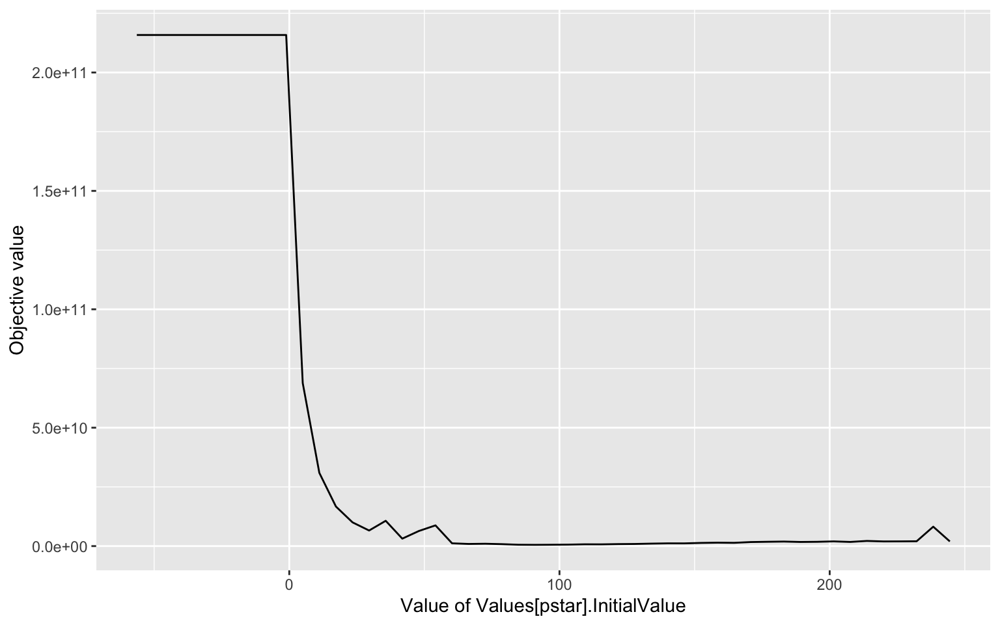

First, load the libraries needed for the workflow
library(tidyverse)
library(CoRC)Put in all variables needed to customise the workflow
Put in the path to the model (.cps), as local path (as string) and load the model. Use loadSBML() for sbml models.
modelPath <- "./Models/Aston2018Breakthrough_model.cps"
model <- loadModel(modelPath)To use the results from the Sigma Point method, I will load the RDS with the results.
SP_result <- readRDS("docs/SP_Aston")
SP_means <- SP_result$sp_means
# set the Global Quantities to the estimated means
#setGlobalQuantities(key = getGlobalQuantities()$key, initial_value = SP_means)
# read out Variance of Global Quantities
SP_cov <- SP_result$sp_cov_matrix
SP_var <- c()
for (i in 1:nrow(SP_cov)){
SP_var[i] <- SP_cov[i,i]
}
model <- getCurrentModel()Load the data into the variable data.
data <- read.csv("Data/Aston2018_data3.csv", sep = " ")Define experiment(s) for Parameter Estimation. For multiple experiments use list of defineExperiments().
pe_experiments <- defineExperiments(
data = data,
type = c("time", "dependent"),
mapping = c(NA, species("V", reference = "Concentration")),
weight_method = "mean_square"
)Set Parameter Estimation Parameters. For more parameters, copy the defineParameterEstimationParameter() function and append the list, or use the make_pe_param_global() function defined in utils and run it on the parameters you want to add.
pe_parameters <- lapply(getGlobalQuantities()$key, make_pe_param_global, lower = 100, upper = 100)Set Parameter Estimation Settings.
pe_randomize_start_values <- FALSE
pe_update_model <- FALSE
pe_method <- setParameterEstimationSettings(
method = "LevenbergMarquardt"
)Set Parameter for Profile Likelihood. For more parameters, copy the defineParameterEstimationParameter() function and append the list, or use the make_pe_param() function defined in utils and run it on the parameters you want to add (see above). I want to use the variance as an upper and lower bound.
# Define beta* and p* as parameters for profile likelihood
i <- c(6,7)
for (i in i){
val <- getGlobalQuantities()$initial_value[i]
pl_parameters <- list(defineParameterEstimationParameter(
ref = getGlobalQuantityReferences(key = getGlobalQuantities()$key[i])$initial_value,
start_value = val,
lower_bound = val - 1.6*val,
upper_bound = val + 1.6*val
))
}Choose maximum number of steps for Profile Likelihood.
max_steps <- 50Do you want to save the result as a RDS object? Also give the file, where you want to save it.
save <- TRUE
file <- "docs/PL_Aston"This should generally not need to be changed, only if the workflow is to be changed more generally.
# Run Profile Likelihood
PL_result <- runProfileLikelihood(
model = model,
pl_parameters = pl_parameters,
max_steps = max_steps,
pe_parameters = pe_parameters,
pe_experiments = pe_experiments,
pe_method = pe_method,
pe_update_model = pe_update_model,
pe_randomize_start_values = pe_randomize_start_values
)
# Save results
if (save){
saveRDS(PL_result,
file = file)
}This workflow produces the following output:
printLikelihoodProfile(PL_result)
#> [[1]]
Creates a function for easy Parameter Estimation Parameter Usage:
make_pe_param <- function(name, upper, lower) {
value_ref <- parameter_strict(name, reference = "Value")
value <- getValue(value_ref)
defineParameterEstimationParameter( ref = value_ref,
start_value = value,
lower_bound = abs(value)*lower,
upper_bound = abs(value)*upper)
}
make_pe_param_global <- function(name, upper, lower){
value <- getGlobalQuantities(key = name)$initial_value
value_ref <- getGlobalQuantityReferences(key = name)$initial_value
defineParameterEstimationParameter(ref = value_ref,
start_value = value,
lower_bound = value-abs(value)*lower,
upper_bound = value+abs(value)*upper
)
}
make_pe_param_global_absolute <- function(name, upper, lower){
value <- getGlobalQuantities(key = name)$initial_value
value_ref <- getGlobalQuantityReferences(key = name)$initial_value
defineParameterEstimationParameter(ref = value_ref,
start_value = value,
lower_bound = value-lower,
upper_bound = value+upper)
}